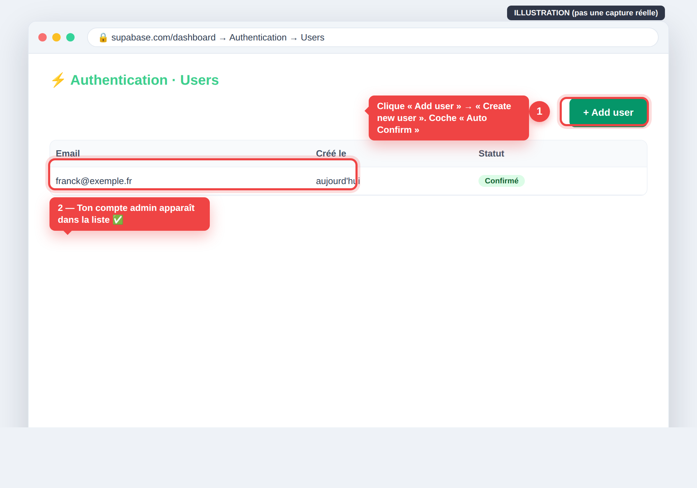
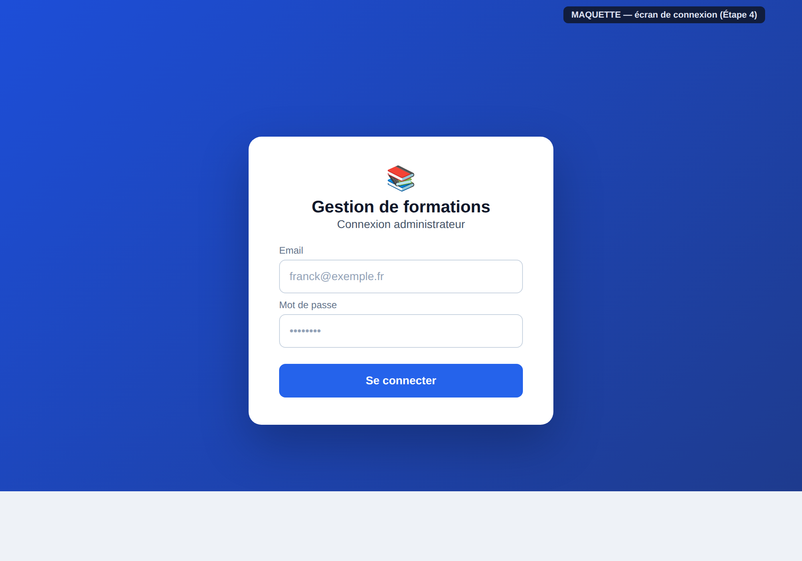

Notice 10 / 24 • Guide perso pour Franck • juin 2026
On met une page de connexion et on protège les autres pages.
1) Créer ton compte admin dans Supabase (clic par clic)

Authentication → Users : on clique « Add user » pour créer ton compte admin.
Dashboard Supabase → menu de gauche « Authentication » → onglet « Users ».
Clique « Add user » → « Create new user ».
Saisis ton email et un mot de passe (note-le), coche « Auto Confirm User », clique Create user.
✅ Vérifie : Ton email apparaît dans la liste des utilisateurs ✅.
2) Créer la page de connexion + la protection

À quoi ressemblera ton écran de connexion (maquette).
Là, c'est du code. Le plus simple et fiable pour un débutant : demander à Codex (ou Claude Code) de l'écrire, puis vérifier.
🤖 Prompt à copier-coller dans Codex (ou Claude Code)
Dans ce projet Next.js (App Router) avec @supabase/ssr déjà installé, crée une page de connexion sur /login (email + mot de passe) qui utilise Supabase Auth, et un middleware qui protège toutes les pages sauf /login en redirigeant les visiteurs non connectés vers /login. Ajoute aussi un bouton de déconnexion. Explique-moi simplement ce que tu as créé.
Un middleware est un videur à l'entrée : il vérifie le badge avant de laisser voir la page.
✅ Vérifie : Lance npm run dev. Va sur http://localhost:3000/dashboard SANS être connecté → tu es renvoyé vers /login. Connecte-toi → tu entres. ✅
⚠️ Ne jamais écrire un mot de passe en clair dans le code. C'est Supabase qui les stocke, chiffrés.
💬 Un mot, Franck
L'authentification impressionne sur le papier, mais Supabase fait 90 % du boulot. Si tu coinces, c'est NORMAL — appelle-moi ou sonne Matthieu. Il m'a demandé de t'aider justement pour ces étapes « techniques ».
— Claude, l'assistant que Matthieu (ton beau-frère) a chargé de t'aider 🤝